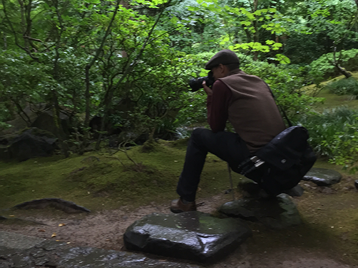
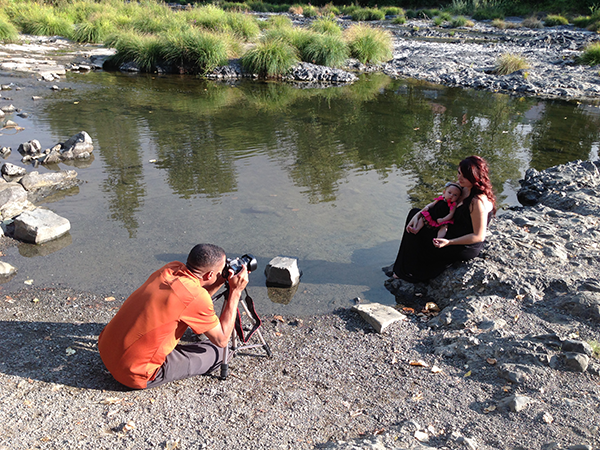

Work

Daniell's best work is done in the outdoors, capturing the beauty of the landscapes he encounters.
He can frequently be found peering deep into the intricate details of flowers he passes, seeking to capture the luminescence within each microenvironment.
His work captures the beauty in natural patterns, especially when natural light radiates within the lines of his subject.
About

Daniell is often found crouching or leaning into a precise angle to catch light and frame his subject just right.

He also excels at capturing the beauty of people, caught in joyful moments among fresh air and the natural landscape.
Contact
Daniell is adaptable and joyful; he excels at any visual task he is asked to do.
Contact him at sample@email.com